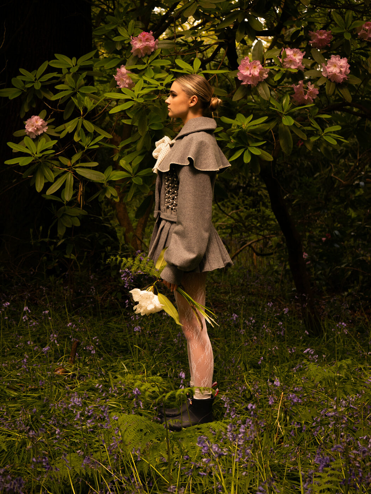
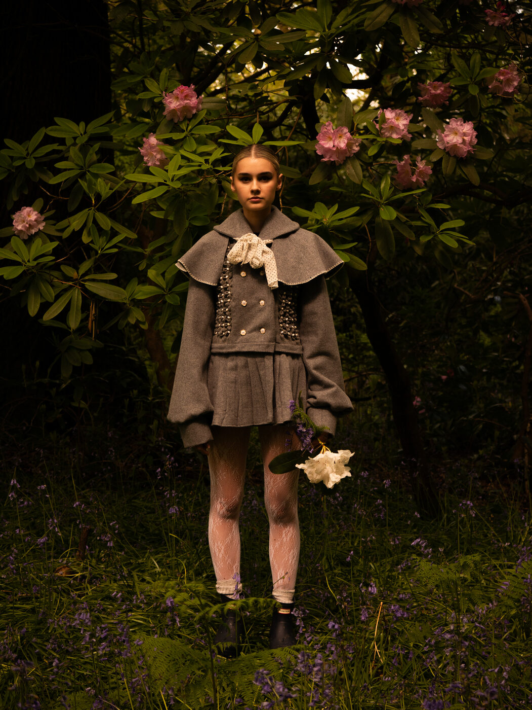
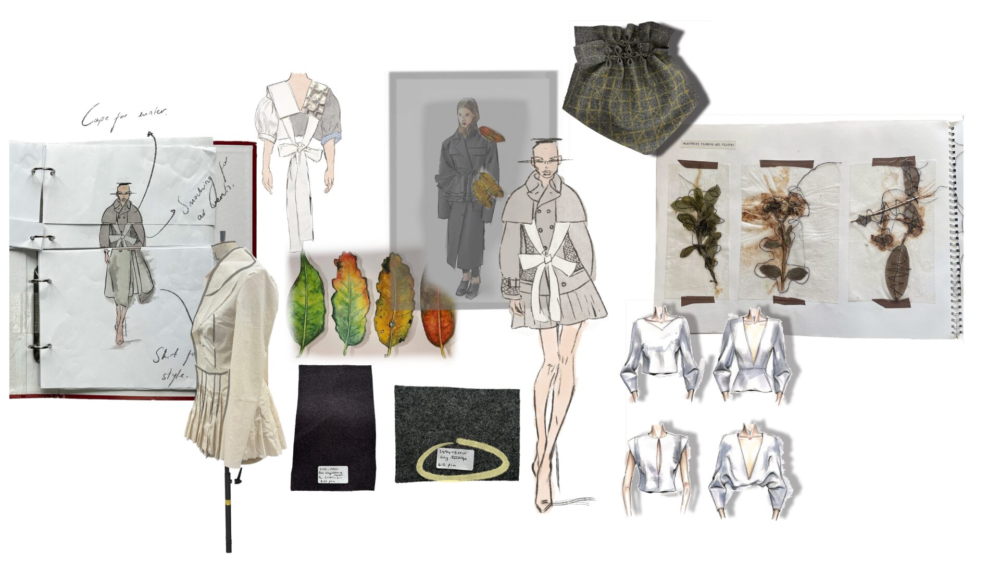
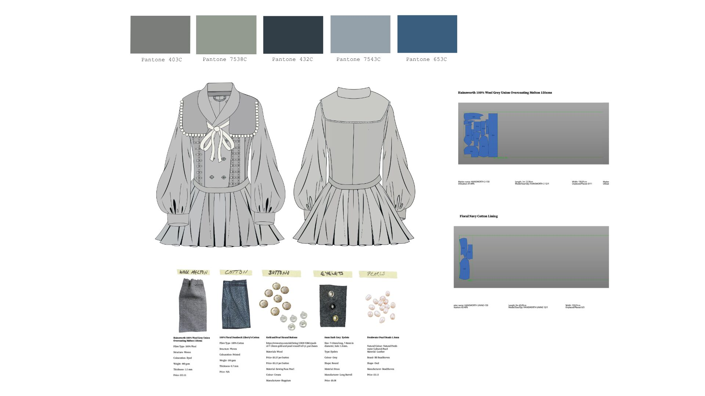
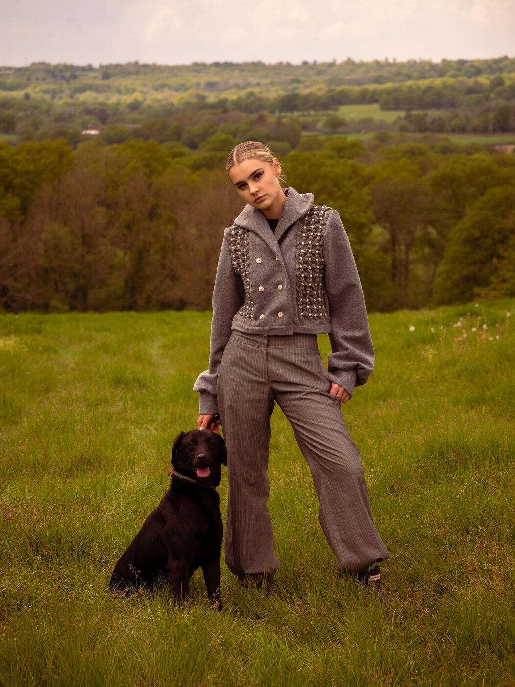
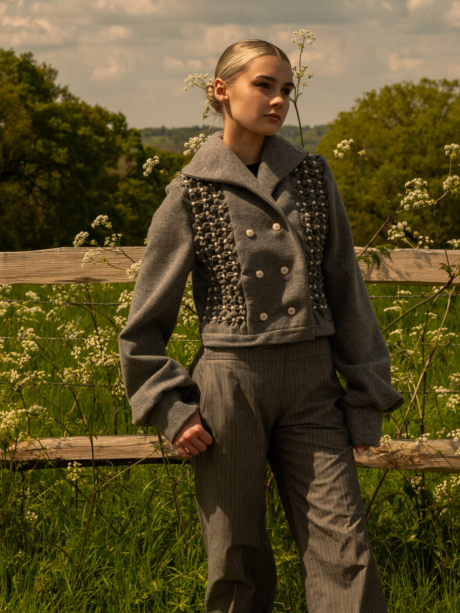

I designed and constructed a wool pea coat using Hainsworth wool. The theme was transeasonal, which I explored by incorporating an adjustable cape and skirt into the jacket to create a sense of transformation and adaptability.
I also integrated vents within the smocked panels to improve airflow. Each vent was concealed within a floral smocking detail and finished with an inner eyelet for a clean, refined look.





